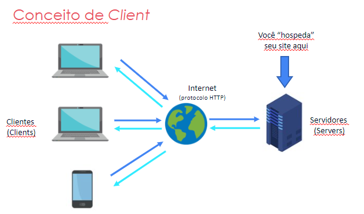
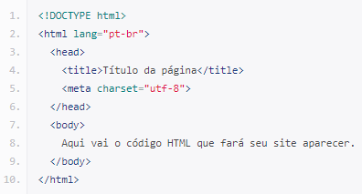

INSTRUÇÕES: Neste índice você deve colocar os tópicos que mais entendeu. Estes apenas são sugestões.
A palavra “computador” vem do verbo “computar” que, por sua vez, significa “calcular”. Sendo assim, podemos pensar que a criação de computadores começa na idade antiga, já que a relação de contar já intrigava os homens.
Dessa forma, uma das primeiras máquinas de computar foi o “ábaco”, instrumento mecânico de origem chinesa criado no século V a.C.
Assim, ele é considerado o “primeiro computador” , uma espécie de calculadora que realizava operações algébricas.
No século XVII , o matemático escocês John Napier foi um dos responsáveis pela invenção da "régua de cálculo". Trata-se do primeiro instrumento analógico de contagem capaz de efetuar cálculos logaritmos. Essa invenção foi considerada a mãe das calculadoras modernas.
Por volta de 1640, o matemático francês Pascal inventou a primeira máquina de calcular automática. Essa máquina foi sendo aperfeiçoada nas décadas seguintes até chegar no conceito que conhecemos hoje.
A primeira calculadora de bolso capaz de efetuar os quatro principais cálculos matemáticos, foi criada por Gottfried Wilhelm Leibniz.
"Clients" é um termo empregado em computação e representa uma entidade que consome os serviços de uma outra entidade servidora, em geral através do uso de uma rede de computadores numa arquitetura cliente-servidor.
Cliente/servidor Cliente/servidor é uma modalidade de arquitetura de rede computacional que permite que vários clientes diferentes (denominados processadores remotos) recebam comandos de um servidor central ou de um computador host.
Em informática, um servidor é um software ou computador, com sistema de computação centralizada que fornece serviços a uma rede de computadores, chamada de cliente.
Esses serviços podem ser de naturezas distintas, como por exemplo, arquivos e correio eletrônico.
Esta arquitetura é chamada de modelo cliente-servidor, é utilizada em redes de médio e grande porte (com muitas máquinas) e em redes onde a questão da segurança desempenha um papel de grande importância. O termo servidor é amplamente aplicado a computadores completos, embora um servidor possa equivaler a um software ou a partes de um sistema computacional, ou até mesmo a uma máquina que não seja necessariamente um computador.
Os servidores podem fornecer várias funcionalidades, muitas vezes chamado de "serviços", tais como a partilha de dados ou de recursos do sistema entre vários clientes, ou computação desempenho para um cliente. Um único servidor pode servir vários clientes, e um único cliente pode usar vários servidores. Um processo cliente pode ser executado no mesmo dispositivo ou pode se conectar através de uma rede para um servidor em um dispositivo diferente.
O documento HTML sempre inicia com o que chamamos de estrutura básica. Esta estrutura é quase que imutável. Sempre será dessa forma e você sempre, sempre começará seu HTML começando por esse código. Geralmente os editores como o Sublime Text já tem atalhos para iniciar os documentos HTMLs com essa estrutura, logo, você não precisa se preocupar em decorá-la, mas é bom que faça. Veja abaixo como ela se inicia:
É possível compreender o documento em HTML de uma maneira muito simples, através de uma divisão de blocos das tags essenciais, conforme a a seguinte estrutura:
A principal diferença entre a lista ordenada e a lista não-ordenada está na maneira com que os itens de cada lista são apresentados - a lista ordenada enumera os elementos; a lista não-ordenada coloca marcadores antes de cada elemento.
As tags usadas para criar uma lista não ordenada são <ul> e <li>. A tag <ul> é usada para definir a lista e a tag <li> é usada para cada item da lista.
As listas ordenadas ou numeradas são usadas para indicar alguma sequência ou numeração
As tags usadas para criar uma lista não ordenada são <ol> e <li> . A tag <ol> é usada para definir a lista e a tag <li> é usada para cada item da lista.
O ELEMENTO <a> em HTML (ou elemento âncora), com o atributo href cria-se um hiperligação nas páginas web, arquivos, endereços de emails, ligações na mesma página ou endereços na URL. O conteúdo dentro de cada <a> precisará indicar o destino do link.
| HTML Demo: <a> |
| <p>You can reach Michael at:<p> |
| <ul> |
| <li><a href="https://example.com">Website a></li> |
| <li><a href="mailto:m.bluth@example.com">Email a></li> |
| <li><a href="tel:+123456789">Phone a></li> |
| <ul> |